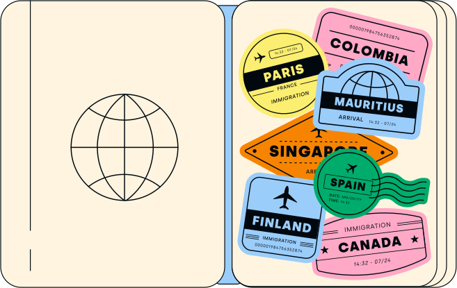

La expansión global es esencial para satisfacer la demanda y superar a los competidores. Dado que el 77% de los empleadores actualmente tienen dificultades para cubrir vacantes, obtener acceso a un pool de talentos internacional también aumenta las posibilidades de encontrar los mejores candidatos para ayudarte a hacer crecer tu empresa.
Sin embargo, es posible que probar nuevos mercados no siempre dé resultados, y dar este paso por sí solo conlleva riesgos legales y financieros para tu empresa. Lidiar con leyes laborales complejas, limitaciones regulatorias y diferencias culturales también puede ser una carga para tu equipo de RR.HH.
Un Employer of Record (EOR) como Deel apoya la expansión internacional y al mismo tiempo elimina el riesgo. Aquí te mostramos cómo.
El papel de un employer o record (EOR) global en la contratación internacional
Un EOR es un proveedor de servicios que asume la responsabilidad de tus contrataciones internacionales. Mientras tú contratas y supervisas a estos empleados, el EOR es su empleador legal. También puedes gestionar los impuestos sobre la nómina y la administración de beneficios a través de ellos.
El uso de un EOR evita el costoso y lento proceso de configuración de una entidad y te permite contratar colaboradores (y, en algunos casos, también freelancers).
Aprovechar un EOR global para probar mercados
Las ventajas del EOR van más allá de la fase de contratación inicial. Estos proveedores hacen que la exploración de nuevos mercados sea más rentable y reduzca el riesgo, ya que puedes evaluar la viabilidad de tu producto o servicio de manera más eficiente que si establecieras una entidad.
Analicemos estos beneficios con más detalle.
La velocidad de comercialización es clave durante la expansión. Las empresas globales deben establecerse lo suficientemente rápido como para capitalizar la demanda o el talento antes de que cambien las condiciones. Dado que el empleo internacional ahora es más popular que nunca (el 89% de los contratos creados en la plataforma Deel son remotos), también enfrentan mucha competencia.
 Los EOR utilizan sus entidades ya existentes para establecerse en nuevos países en cuestión de semanas. También puedes probar varios mercados a la vez. Por ejemplo, Veriff utilizó Deel EOR para establecerse en Reino Unido y Alemania.
Los EOR utilizan sus entidades ya existentes para establecerse en nuevos países en cuestión de semanas. También puedes probar varios mercados a la vez. Por ejemplo, Veriff utilizó Deel EOR para establecerse en Reino Unido y Alemania.
Los EOR también te permiten asignar tus recursos de manera más efectiva si subcontratas tareas de RR.HH con ellos. Utilizan su experiencia para optimizar procesos como la gestión de servicios de nómina y la comparación de paquetes de beneficios locales.
Mientras tanto, tu departamento de RR.HH no tiene que absorber el trabajo adicional: Change, cliente de Deel, estima que nuestro EOR redujo su carga de trabajo mensual en 300 horas.
Gestionar el riesgo continuo también es más fácil a través de un EOR. Por ejemplo, usar Deel te permite:
- Localiza contratos y recopilar toda la documentación necesaria para las contrataciones.
- Almacenar, administrar y revisar documentos en un solo lugar.
- Mantenerte actualizado sobre las leyes y regulaciones laborales con revisiones periódicas de los contratos.
- Gestionar pagos de tasas gubernamentales y contribuciones sociales.
- Cumplir con las leyes de privacidad y protección de datos.
Además, hacer que el EOR actúe como único empleador legal elimina el riesgo de que te consideren un establecimiento permanente en el extranjero y de que te cobren tarifas adicionales.
El hub de recursos para expandir tus equipos comerciales y llegar a nuevos mercados a través del crecimiento global.


Aprovechar el talento global para hacer pruebas de mercado exitosas
La mejor característica de un EOR es su fácil acceso a equipos globales para liderar tus pruebas de mercado y tu expansión internacional.
Esto se debe a que necesitas al mejor talento local para confirmar la viabilidad del mercado y decidir si vale la pena realizar más inversiones. Estos equipos también son responsables de identificar obstáculos potenciales y perfeccionar tu estrategia.

Los colaboradores locales también tienen muchas ventajas sobre los reubicados. Utilizando su experiencia y conocimiento de la cultura, deberían poder:
- Saber cómo dar la mejor impresión posible de tu empresa.
- Decirte qué estrategias de marketing funcionarán mejor.
- Establecer relaciones rápidas con clientes y aliados.
- Reducir los malentendidos debido a diferencias culturales y malas traducciones.
- Encontrar las fuentes de datos más confiables.
De hecho, el talento local puede ser decisivo para la expansión global. Por ejemplo, el gigante minorista Walmart no logró ingresar al mercado alemán y perdió mil millones de dólares (USD) en el proceso. Un colaborador local podría haberles dicho que no se posicionarán como de bajo costo cuando los consumidores alemanes prefieren productos de alta gama.
Los EOR no solo reclutan personal rápidamente, sino que también te permiten escalar y ajustar. Si te expandes mediante fusiones y adquisiciones, estas pueden ayudarte a minimizar los riesgos e integrar el talento heredado.
💡Ver también: Cómo contratar talento non-tech en LATAM
Descubre cómo Deel ayudó a Moralis a duplicar su fuerza laboral
Con Deel, Moralis contrató a más de 95 empleados en 36 países, pero aún así ahorró 150 horas de trabajo administrativo.
 “Realmente sentí una conexión instantánea con Deel. Me di cuenta de que las cosas avanzaban rápido y que el equipo era flexible y estaba dispuesto a arreglar las cosas según necesitábamos. En solo dos semanas, Deel nos hizo el onboarding, llamó a los freelancers e hizo los primeros pagos para más de 70 personas”, dice la Head of People & Culture de Moralis, Lizette Kuld.
“Realmente sentí una conexión instantánea con Deel. Me di cuenta de que las cosas avanzaban rápido y que el equipo era flexible y estaba dispuesto a arreglar las cosas según necesitábamos. En solo dos semanas, Deel nos hizo el onboarding, llamó a los freelancers e hizo los primeros pagos para más de 70 personas”, dice la Head of People & Culture de Moralis, Lizette Kuld.
Nota: Si te retiras de un mercado, los EOR también te permiten conservar el talento global que contrataste mediante visa patrocinada. Puedes ofrecer que los colaboradores trabajen de forma remota desde su país de origen o que se reubiquen en otras entidades legales.
Estrategias exitosas para contratar a nivel global con EOR
Si bien los EOR son de mucha ayuda, seguirás involucrado en muchas decisiones. A continuación se presentan algunas prácticas recomendadas que te ayudarán a aprovechar al máximo la relación con tu proveedor y garantizar un mayor éxito.
- Obtén el mejor deal: las ofertas de EOR varían, pero puedes reducir la investigación creando una solicitud de propuesta (RFD) y permitiendo que los proveedores te hagan ofertas.
- Explora los diferentes casos de uso de EOR: no hay necesidad de parar en la contratación y la expansión global cuando los EOR como Deel también ayudan a consolidar la tecnología de nómina y RR.HH
- Atrae y mantén a los mejores candidatos: utiliza tu proveedor como estrategia de retención y contratación anunciando tu nueva flexibilidad de ubicación

- Aclara tu mercado objetivo: reúne insights de la industria, consejos y apoyo de tu customer success manager de EOR para presentar tus productos y servicios al mercado objetivo de la manera correcta.
- Colabora con el EOR en el onboarding: existe cierta superposición entre el proceso de preparar a los nuevos colaboradores y el hecho de darles la bienvenida a tu empresa. Analiza la secuencia de onboarding, el cronograma y las actividades con tu EOR para asegurarte de que estés alineado.
- Céntrate en la experiencia de los colaboradores: trabajar en diferentes lugares y zonas horarias puede crear distancia entre los equipos. Ayúdalos a mantenerse conectados con las herramientas colaborativas de tu EOR, como los plugins de Slack de Deel.
El aspecto más crítico de las estrategias globales de gestión de la fuerza laboral es elegir la solución EOR adecuada. Los principales proveedores te permiten ingresar a mercados multinacionales, ofrecer funciones integrales y tener precios competitivos. Como ha visto el equipo de Oursky, la reputación de tu EOR también influye en tu éxito.
La atención al cliente también es clave. El proveedor anterior de Teamflow no tenía soporte 24/7, lo que significaba que un problema de $100,000 tardó una semana en resolverse.
"Elegimos a Deel principalmente por su gran compromiso con su misión y su priorización del éxito del cliente", dijo el Head of Business Operations, Chris Baugh.
💡 Ver también: estrategias para expandir tu startup en LATAM
Historias de nuestros clientes: cómo Revolut, Project44 y otros se expandieron con éxito a nivel global
Si tienes curiosidad sobre el impacto que podría tener un EOR en tus planes de expansión global, aquí encontrarás algunos casos de éxito reales.
La popular aplicación bancaria Revolut quería crear el primer servicio financiero global del mundo, por lo que el empleo internacional era esencial para su misión.
El HR Manager, Luke Besling, le dio crédito a Deel EOR por darle a la fintech su ventaja competitiva: “Gracias a Deel, podemos contratar talento local en cualquier país donde queramos expandirnos mucho antes de establecer la entidad allí. Efectivamente, esto nos da una ventaja”.
Al igual que Revolut, Project44 requiere un sólido soporte global para gestionar las operaciones en más de 25 países. Deel les ha ahorrado alrededor de 500.000 dólares al año en comparación con otras soluciones de contratación.
Si bien es fácil centrarse en el éxito financiero, no olvidemos el efecto que tienen los EOR en la cultura empresarial. La empresa francesa Slite descubrió que podía ayudar a los empleados a lograr sus sueños de mudarse y ayudar a los demás.

Desbloquea nuevos mercados rápidamente con Deel
Con acceso a EOR globales, tu empresa puede planificar su próximo movimiento global con confianza. Explora los mercados internacionales con un riesgo legal y financiero mínimo, busca los mejores candidatos locales y establece tu presencia relativamente en poco tiempo.
Como el mayor proveedor de EOR del mundo, Deel elimina fronteras. Contamos con entidades locales en más de 100 países para que puedas utilizar nuestro sistema probado para adaptarte a cualquier cambio del mercado e ir a donde te lleve la demanda.


.svg)